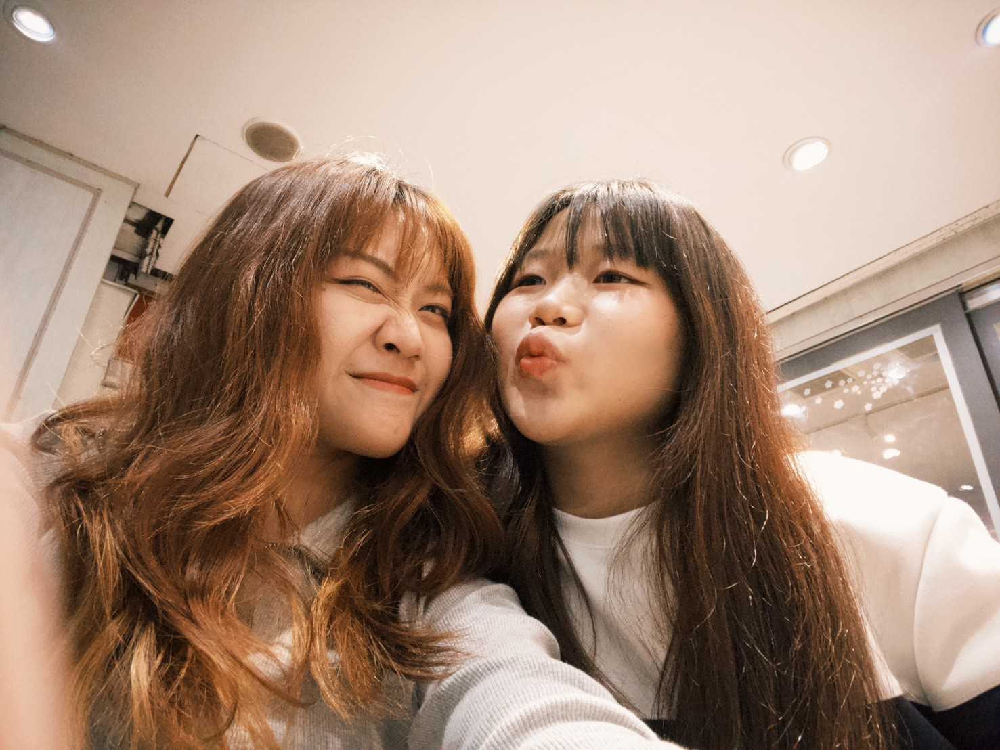
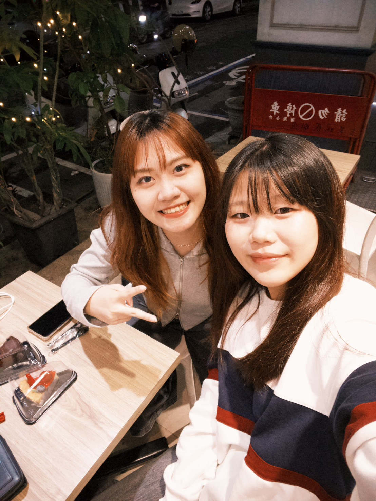
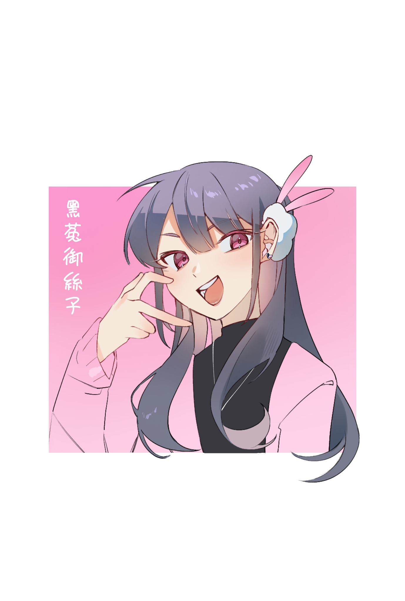
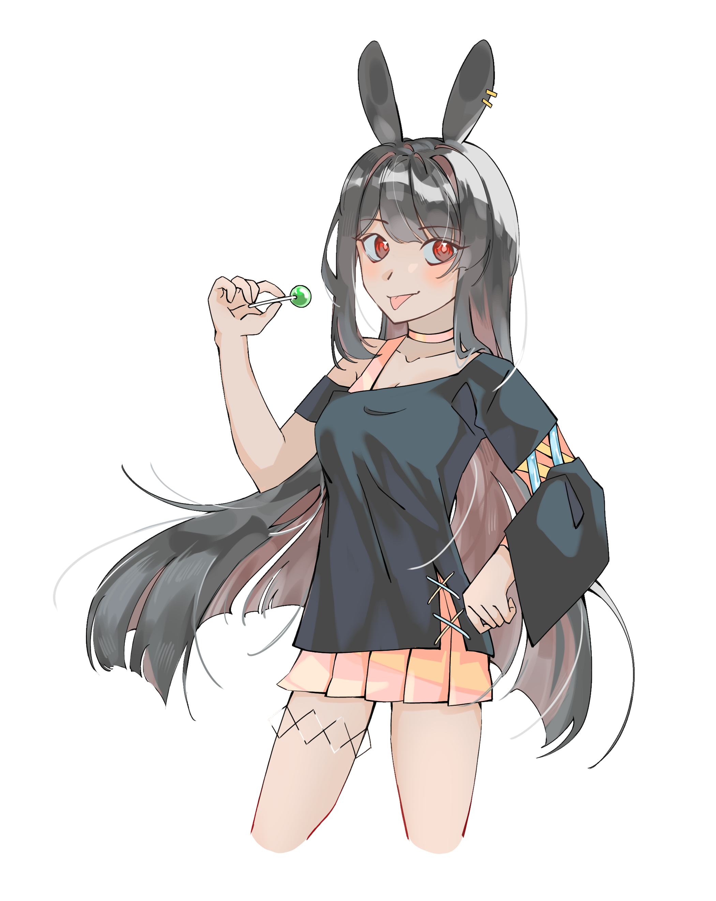
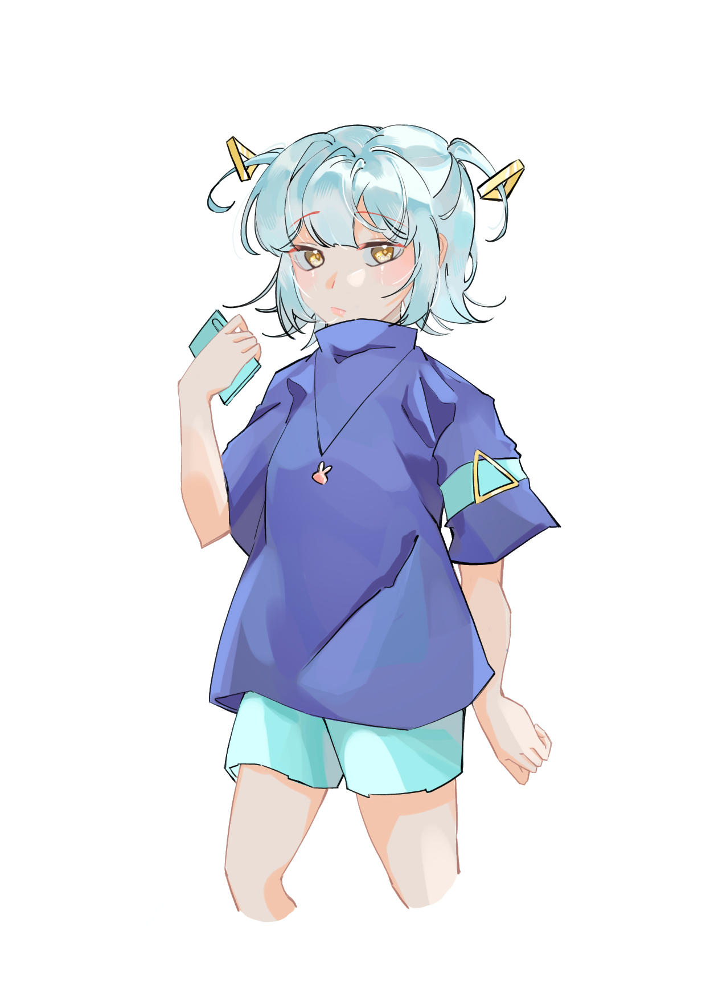
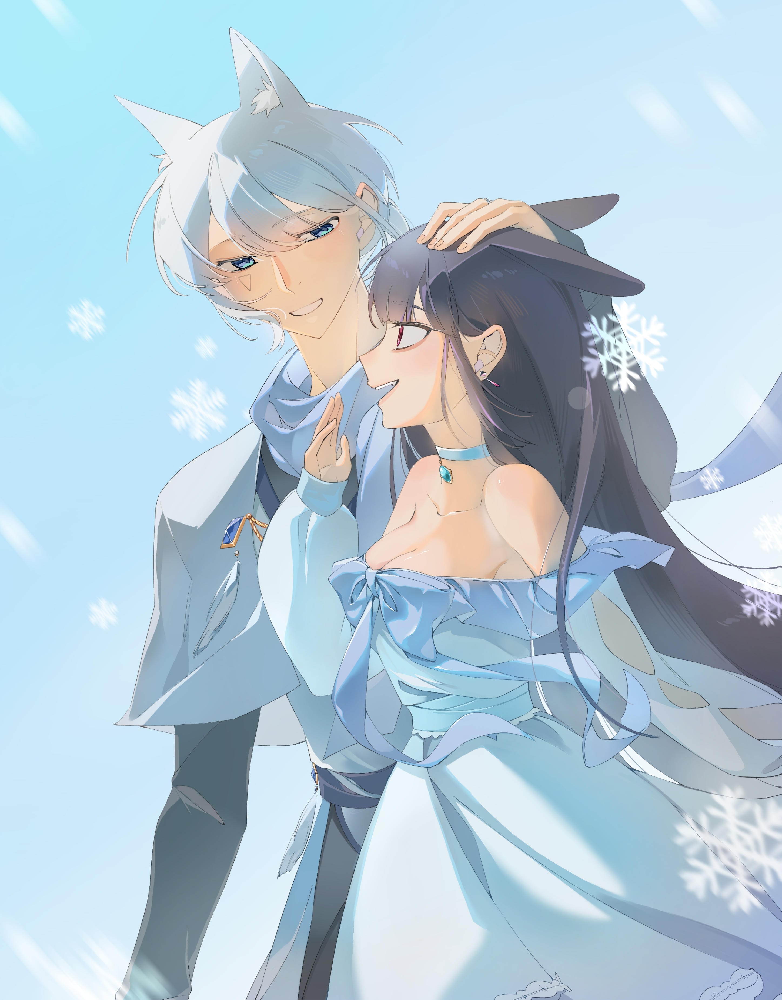
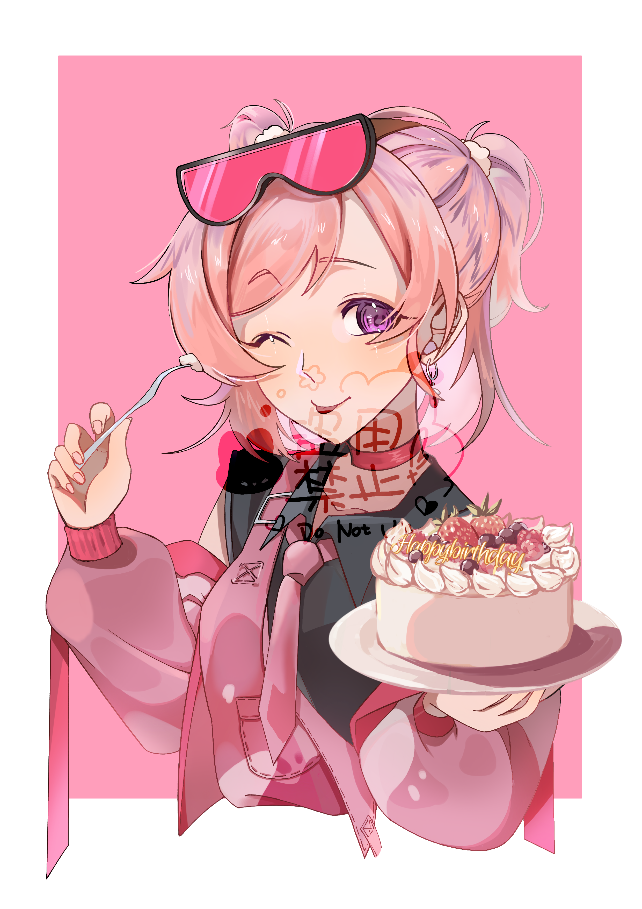
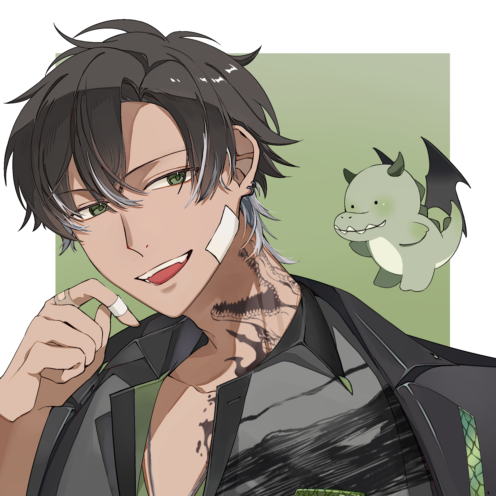
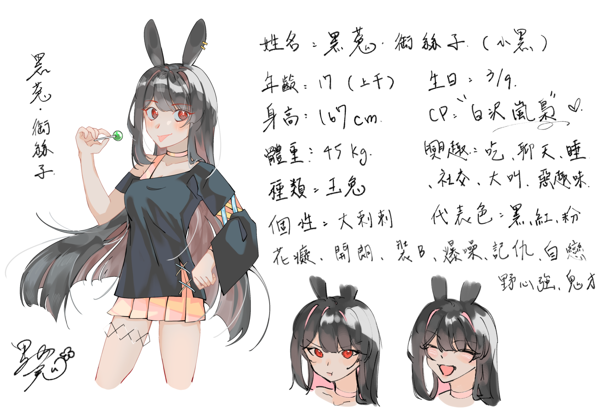
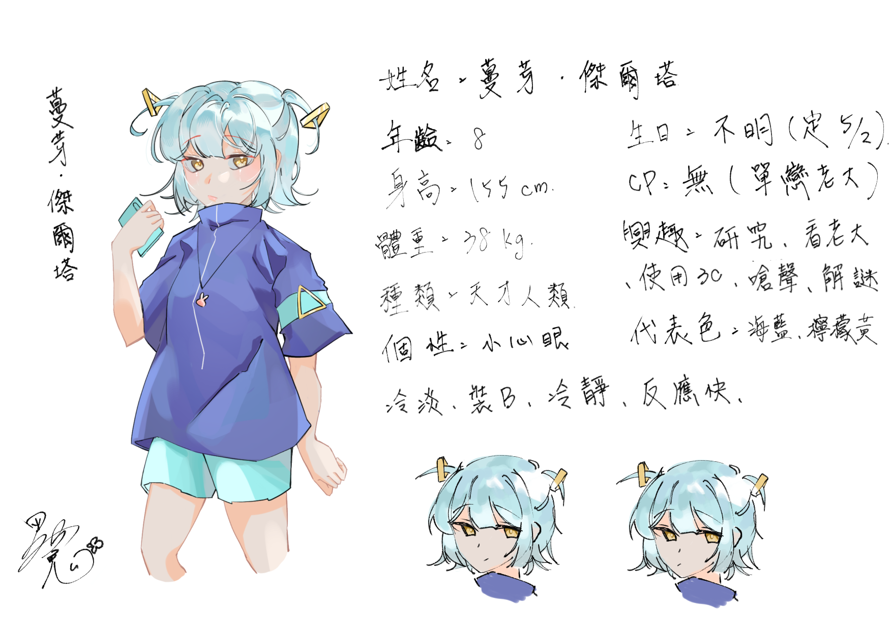

謝謝妳不離不棄，這輩子是分不開了♥

蔡珊鈺
"從國中時的青澀到現在快要步入社會的大學階段，回頭看才發現我們竟然一起走了這麼久。這中間我們不是沒有過摩擦，經歷了無數次的磨合、誤會還有各自嘴硬的時刻，但每一次的爭執反而讓我們更懂得怎麼去珍惜對方。謝謝你一直都在，參與了我整段青春，也包容了我所有的不完美!"


專注於潮流日系風格插畫。從初期的靈感構思、線稿調整到最終的色彩堆疊，我試圖在二維的世界裡，賦予他們最真實的靈魂與故事。
看著她們在舞台上閃閃發光的模樣，總能重新點燃我對創作與生活的熱情。那些歡笑與感動，是我日常裡不可或缺的精神糧食與靈感泉源!
對粉紅色的偏愛，是生活中最溫柔的堅持。這些充滿少女心的色彩與甜美事物，不僅僅是視覺上的享受，更是疲憊日常裡的浪漫解藥，帶給我源源不絕的快樂與動力!
"從國中時的青澀到現在快要步入社會的大學階段，回頭看才發現我們竟然一起走了這麼久。這中間我們不是沒有過摩擦，經歷了無數次的磨合、誤會還有各自嘴硬的時刻，但每一次的爭執反而讓我們更懂得怎麼去珍惜對方。謝謝你一直都在，參與了我整段青春，也包容了我所有的不完美!"



"遊戲主播試圖轉行顏職主播"

"卓月日(顏職主播)"

"嗨!我是庭羽，我與世無爭"

"白沢嵐梟"

"梨子"

"萌音"

我的第一個 OC「黑菟御絲子」，是我國二那年和朋友一起創作的產物。那時候的我們總聚在一起編織世界，她也因此在朋友的角色故事裡，經歷了一段轟轟烈烈的跨生死戀情。隨著時間推移，雖然和當初的朋友失去了聯繫，但也正是從那時起，御絲子開始長出自己的血肉——她擁有了真正屬於自己的個性和世界觀，不再是誰的附屬，而是成為了一個完整的個體。

活了上千年的黑菟御絲子擁有一頭內層染粉紅的及腰黑髮與招牌黑兔耳。她外表看似是個愛吃棒棒糖、開朗愛社交的 17 歲少女，實際上卻是個大喇喇、愛裝B、且極具野心的鬼才。她既有敢愛敢恨、與「白沢 嵐梟」跨越生死戀愛的純情花癡一面，也有脾氣火爆、記仇並熱衷惡趣味的惡魔性格。

擁有海藍色與檸檬黃的代表色。一頭淺藍色雙辮髮和冷淡的黃色雙眸，加上她手中不離身的平板，展現出她對研究、使用 3C 和解謎的狂熱。她的個性既冷靜、反應快，又帶著「裝B」和「嗆聲」的特質，加上最關鍵的「小心眼」，是一個讓人無法忽視、個性鮮明的存在。







